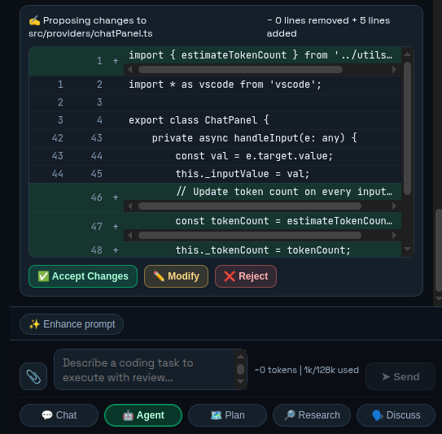
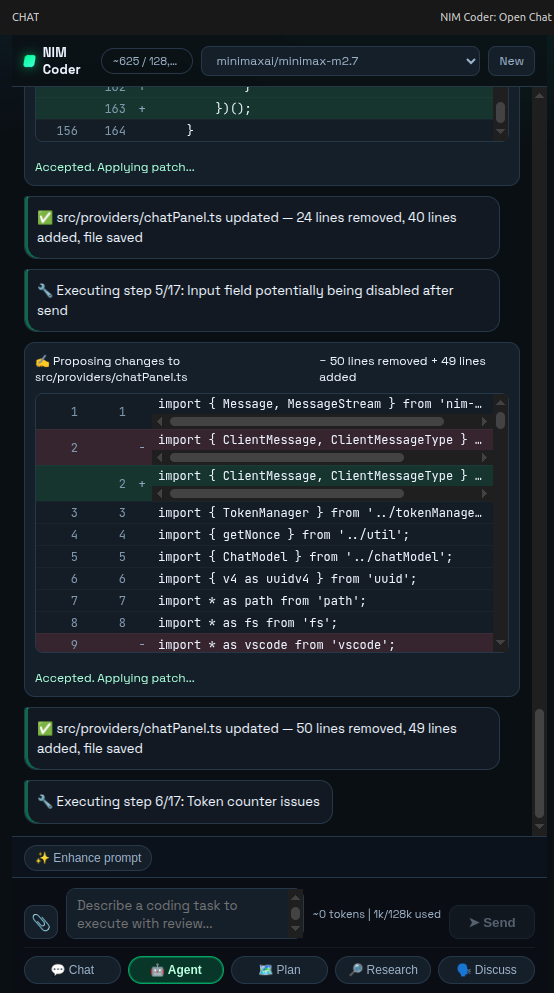

✍️ Proposing changes


⚡ Now in beta
plan → confirm → diff → accept → ship
An AI coding agent for VS Code. Reviews your code, proposes exact changes, waits for your approval before writing a single byte.
↓ scroll
// demo
✍️ Proposing changes

⚡ Multi-step execution

nim-coder terminal
// features
grep
Scans only source files and skips noisy folders like node_modules and build output.
diff
Shows a reviewable patch with accept, modify, or reject controls before writing changes.
&&
Generates multi-file diffs at once so larger refactors stay fast and predictable.
plan
Simple asks run immediately while deeper tasks become explicit, ordered execution plans.
ctx
Maintains file and conversation context so changes remain coherent across long sessions.
>>_
Runs shell commands inline and streams output while preserving human approval checkpoints.
// workflow
| NIM Coder ✅ | Other tools ❌ |
|---|---|
| Reads only source files | Reads venv and node_modules |
| Shows diff before writing | Edits silently |
| Waits for your accept | Auto-applies changes |
| Parallel diff generation | Sequential, blocking |
| Sticky status bar | Status disappears mid-scroll |
// get started
git clone https://github.com/talha307841/free-coding-agent cd nim-coder && npm install && npm run build
Works with VS Code 1.85+ · TypeScript · Python · Rust · Go · any language